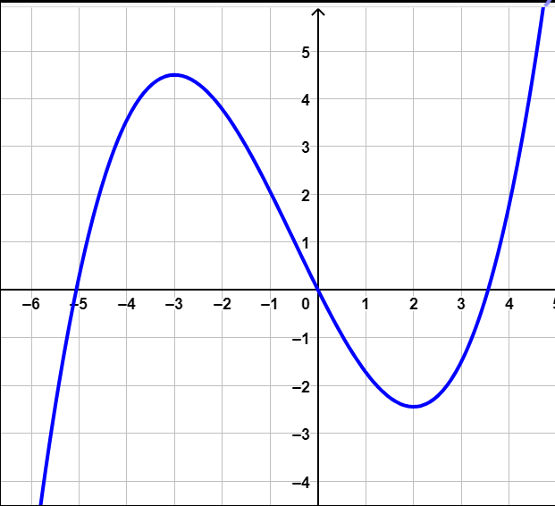
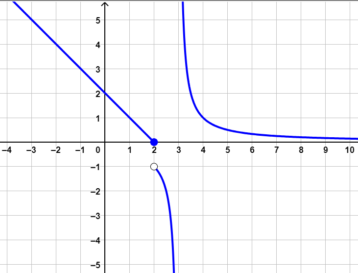

Compiti per casa
Esercizio 1
Consideriamo la funzione \(f\) rappresentata dal grafico

Calcolare il valore dei seguenti limiti
\[\lim_{x \to -\infty} f(x)\]
\[\lim_{x \to +\infty} f(x)\]
\[\lim_{x \to -1} f(x)\]
Svolgimento:
Esercizio 2
Consideriamo la funzione \(f\) rappresentata dal grafico

Calcolare il valore dei seguenti limiti
\[\lim_{x \to -\infty} f(x)\]
\[\lim_{x \to +\infty} f(x)\]
\[\lim_{x \to 2^{-}} f(x)\]
\[\lim_{x \to 2^{+}} f(x)\]
\[\lim_{x \to 3^{-}} f(x)\]
\[\lim_{x \to 3^{+}} f(x)\]
Svolgimento:
Esercizio 3
Svolgere gli esercizi n° 264, 265, 266, 272 a pag. 1530 del libro di testo.